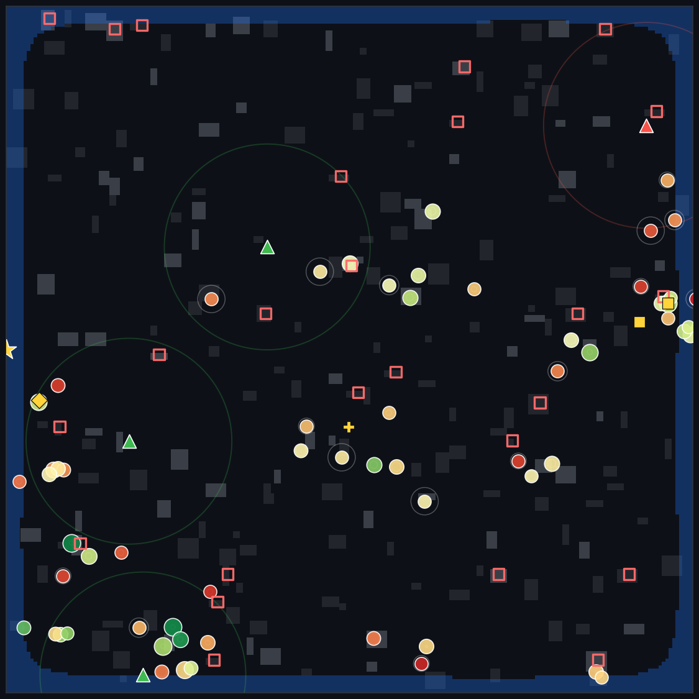

| # | Team | Target | ETA | Grp | Survival Window | Equipment | Conf. |
|---|---|---|---|---|---|---|---|
| 1 | Excavator r1 + Medical r2 | 🏚 belief_236 | 4 min | 8 | 4.1 h | excavator, medical | 85% |
| ↪ Excavator r1 + Medical r2 -> belief_236 (243 min window, 5 min travel, value=4.63) over farther belief_173 (243 min window, value=3.41); belief_173 would no longer be reachable this round. | |||||||
| 2 | Boat r0 | 🌊 belief_248 | 6 min | 6 | 6.7 h | boat | 61% |
| ↪ Boat r0 -> belief_248 (403 min window, 8 min travel, value=3.62) over nearer belief_243 (403 min window, value=2.84); belief_243 would no longer be reachable this round. | |||||||
| 3 | Boat r3 | 🌊 belief_220 | 0 min | 3 | 6.4 h | boat | 34% |
| ↪ Boat r3 -> belief_220 (407 min window, 9 min travel, value=2.19) over nearer belief_80 (333 min window, value=2.05); belief_80 would no longer be reachable this round. | |||||||